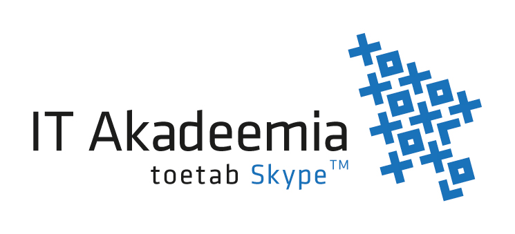
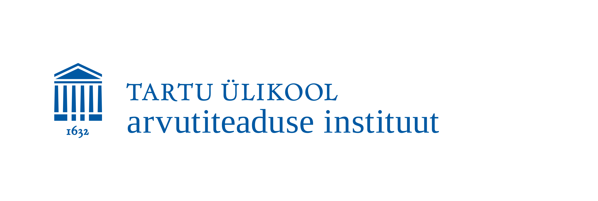

<b>Maatriksiülesannete lahendamise veebikeskkond</b>
<br>
<div class="kastide_organisaator_avaleht viited">
   <div class="kast_avaleht" style="background-color:#1FBA16">
      <div class="maatriksi_konteiner_avaleht" style="background-color:white">
         <a>Külastate hetkel Priit Kalda Tartu Ülikooli informaatika eriala bakalaurusetöö 
         (juhendajad: Valdis Laan ja Siim Karus) raames loodud lineaaralgebra ülesannete, 
         täpsemalt maatriksiülesannete lahendamise õppimist abistavat veebikeskkonda. 
         See sisaldab ülesandekogu ja elementaarteisenduste rakendajat. Lahendaja peab endiselt otsustama, 
         kuidas kasutades elementaarteisendusi saada maatriks ülesandes nõutud kujule. Kuid teisenduse 
         rakendamine ehk maatriksi sisu (antud juhul arvude) algoritmiline töötlemine ei ole lahendaja poolt vajalik. <br>
         Alustuseks valige järgnevate kategooriate hulgast endale meelepärane ülesanne.
         </a>
      </div>
   </div>
   <div class="kast_avaleht" style="background-color:#1DD3DD">
      <div class="maatriksi_konteiner_avaleht">
         <a  href="http://www.hitsa.ee/ikt-haridus/ita" ></a>
      </div>
   </div>
   <div class="kast_avaleht" style="background-color:#136EEC">
      <div class="maatriksi_konteiner_avaleht">
         <a  href="http://www.cs.ut.ee/" ></a>
      </div>
   </div>
</div>
<br>
<br>